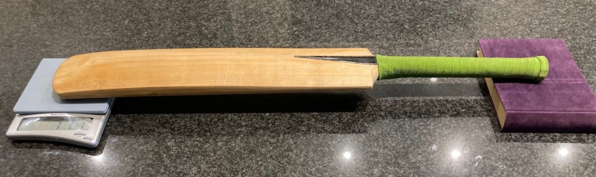

Instructions on how to generate the Inputs to calculate your bat’s Moment of Inertia
To make the measurements you will need:
A digital kitchen scale (that can measure up to 2Kg)
A 12in/30cm ruler
-
Measure the handle length.
With a ruler place it so the edge runs through the shoulders of the top of the blade (see Figure). Mark
a feint
pencil line through the splice. With the ruler measure the distance from this line to the top of the
handle.
 You
should be able to measure to the nearest 1mm. Record this in metres. For example, if you measure the
length as
301 mm, this is 0.301 m.
You
should be able to measure to the nearest 1mm. Record this in metres. For example, if you measure the
length as
301 mm, this is 0.301 m.
- Measure the blade length Now measure the distance from the shoulder line to the bottom of the blade. Record this in metres. Total bat length is simply the sum of the handle and blade length.
-
Measuring Bat Mass & Balance Point
Place the scales on a hard flat surface long enough to take the whole bat.
Turn on the scales, and ensure they are reading zero. Place the toe end of the bat on the centre of the
scales
and rest the handle end on the flat surface. Read and note the value shown (call this w1).
 Remove the bat from the scales. Ensure the reading is zero. Now place the middle of the bat on the scales. Read and note the value shown (this is the total bat mass). Record the measurements in Kg. For example, if your scales read 1215 grammes, this is 1.215Kg. Use all the numbers provided by your scale reading.
 Balance point is calculated as the total bat length multiplied by w1, which is then divided by total
batmass.
Balance point is calculated as the total bat length multiplied by w1, which is then divided by total
batmass.
Balance point = (total bat length x w1) / total bat mass (length measurements need to be in units of metres, and mass in units of Kg)